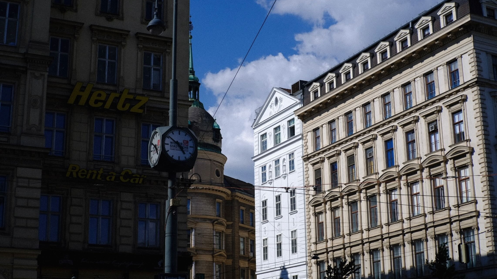

Try clicking on the cards!
Welcome to my portfolio! Here, you can view my publications, my LinkedIn profile,my GitHub repository, and some of my phtoography work.
I am a Master's student in Software Engineering at KU Leuven, focusing on AI Engineering.
My master thesis, with IBA, applies medical imaging to adaptive proton therapy with predictive and explainable AI. I am also a research intern at Brubotics-imec-VUB, predicting the state of health of battery packs using synthetic and real battery data using transfer learning as well as physics guided neural networks.
I am passionate about AI and mathematics and their applications in various sectors like healthcare, sustainable energy, economics, etc. I especially enjoy computer vision, deep learning and image processing.
When I am not coding, you'll find me behind a camera, on a bouldering wall, or lost in a good film.
Languages: Python, Java, C, C++, SQL, JavaScript, HTML/CSS, PHP, Verilog, Assembly.

A look at my published research:
Treating the Image as a System: A Hybrid Signal-AI Approach to Mammogram AnalysisA hybrid approach combining signal processing and deep learning to improve mammogram analysis. Presented at AAIML 2026, published in IEEE Xplore.
A New Mathematical Probability Based Card Counting Strategy for Blackjack Using PythonA probability-based card counting strategy implemented in Python. Presented at FoNeS 2022, published in IET Conference Proceedings and IEEE Xplore.